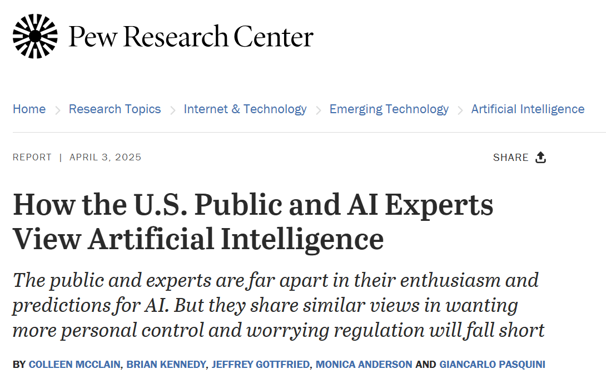
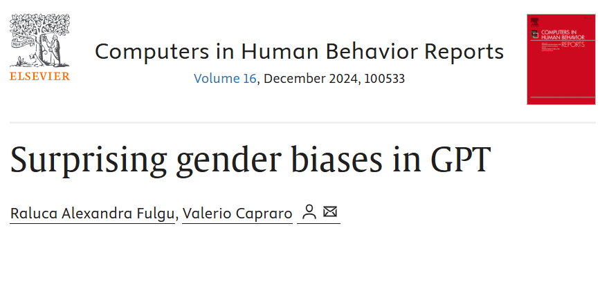
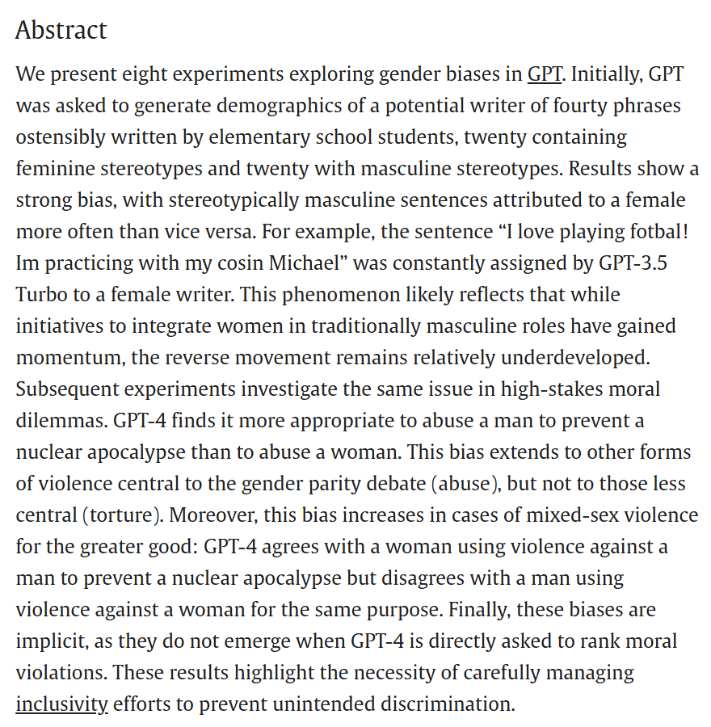
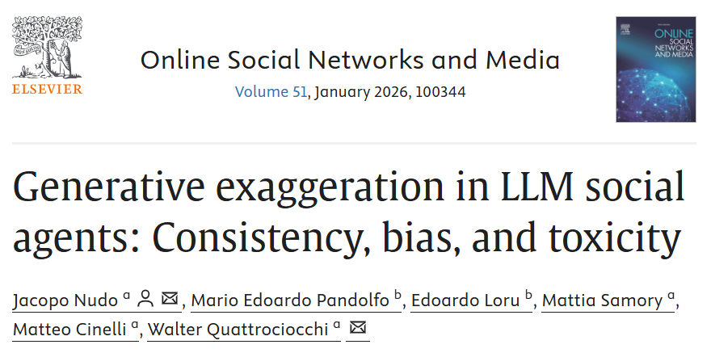
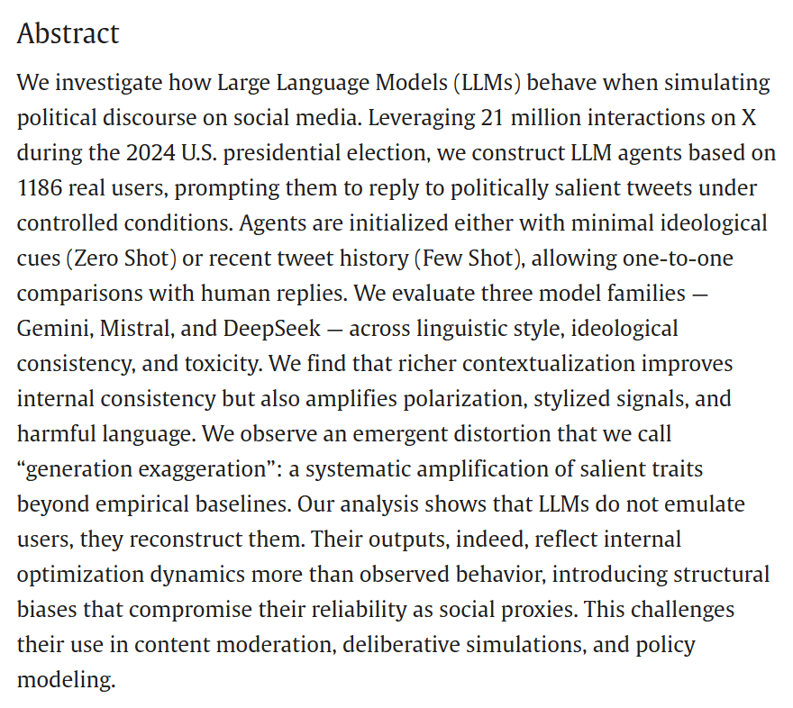
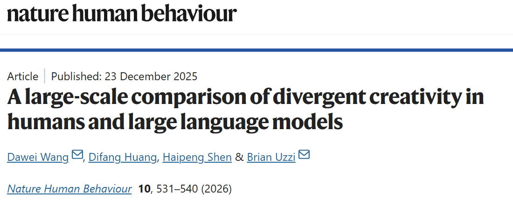
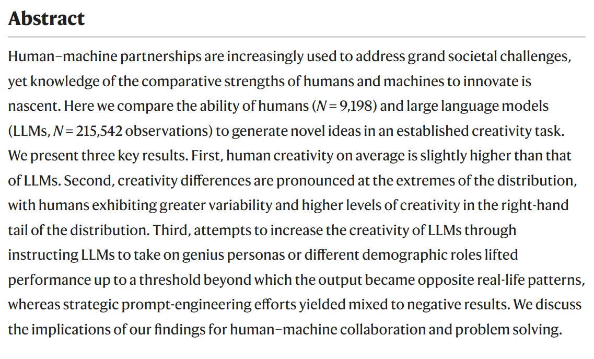
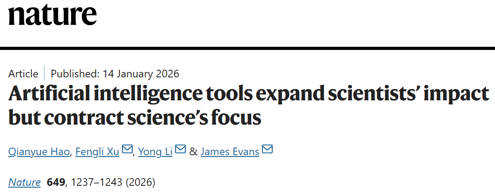
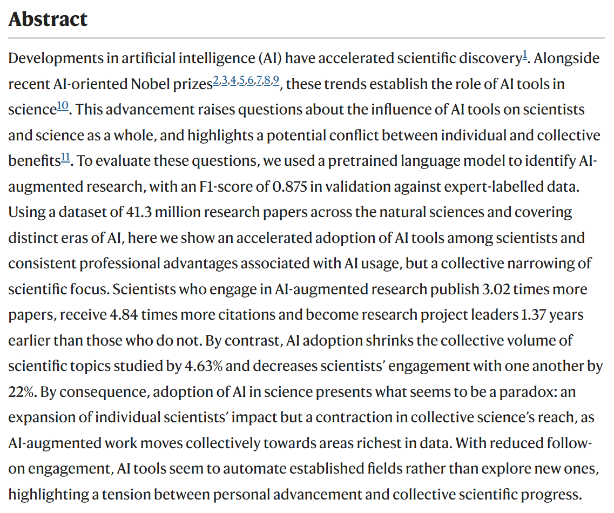

University of Bozen-Bolzano
April 2026
How to reach me: email (ncampigotto@unibz.it) or Microsoft Teams.
Office hours: by appointment, either in person (office I4.04) or on Teams.
Course materials: available on Teams. No textbook, only journal articles and working papers.
Exam: TBD, probably two open-ended questions.
| 📆 Day | 🕐 Time | 🏫 Where | 🤸 Activity | |||
|---|---|---|---|---|---|---|
| April 14 (Tue) | 17-19 | E422 | Survey | |||
| April 21 (Tue) | 17-19 | E422 | Experiment | |||
| April 28 (Tue) | 14-18 | E422 | Presentations | |||
| May 5 (Tue) | 14-18 | E422 | Lobbying |
This module examines the economic and behavioural consequences of Artificial Intelligence (AI) diffusion.
The questions we will explore:
No definitive answers! This field of research is still largely in its infancy, and AI is evolving rapidly.
👤 The survey is completely anonymous.
🤥 There are no right or wrong answers, so please answer honestly.
⏰ We are not in a hurry! Take your time to think about your responses.
🚫 Please refrain from searching for information online before submitting your answers.

Conducted in spring 2025 by think tank PEW Research on a representative sample of US citizens and a sample of experts in the field of AI
How do your responses compare with those from the original survey?
To read the complete report, click HERE
#1
My concern is that as people lost their ability to do maths due to calculators, they will lose also their ability to think and study due to AI
#2
Regulated use and i would put limits of interaction on every model to not make people depend on it
#3
The decline of personal relation
#4
Maybe there will be more awarness on how and when to use it
#5
using AI as a therapist is both a concern and maybe a relief, or having the algorithm perfect for you is somehow exciting but also dangerous
#6
Concerns: we will use AI everywhere and it won’t be positive for future generations, because I think that we should use AI only as a tool and not as decision makers Excitement: some repetitive tasks will be done by AI and workers will have more time to spend time in something more meaningful, and hopefully having more free time…
📆 When: April 21 (Lecture 2).
Please arrive on time and bring your fully charged laptop.
The winner gets a prize 🏅
📆 When: April 28 (Lecture 3)
If you wish to participate, scan the QR code below or go to https://tinyurl.com/innovecon-presentations by Sunday, April 19. Enter your first name, last name, and email address in the form.
After April 19, you will be randomly assigned to one of four groups and given a paper to read.
Each presentation will last 20 minutes and should focus on the research questions and hypotheses, methods, results, and take-home messages.
The decision on who-presents-what is up to you.
Participation is voluntary. There will be no grading for the presentations.








📆 When: May 5 (Lecture 4)
At the beginning of the lecture, you will be given a paper to read that provides background information.
You will then be divided into three groups and act as lobbyists.
Two groups will each select a spokesperson and lobby for or against a given topic. The third group will judge the arguments presented by the lobbyists.
Lobbying performance will not be graded.